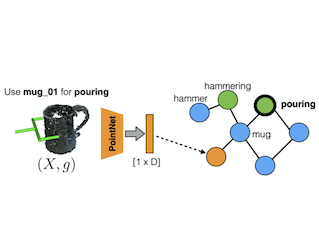

Weiyu Liu
I am a Robotics Ph.D. student at Georgia Institute of Technology, where I am advised by professor Sonia Chernova .
Prior to joining the PhD program, I received my Bachelor’s degree in Electrical Engineering from Georgia Tech.
My research examines semantic reasoning techniques for robotic systems, which enable robots to encode and use semantic knowledge, including concepts, facts, and beliefs about the world. I am interested in developing machine learning techniques for performing inference on semantic knowledge, such as large-scale knowledge graphs. I am also passionate about applying knowledge reasoning to challenges associated with real-world robotic operations, such as task-oriented grasping.
Email /
CV /
Google Scholar /
Github
A Survey of Semantic Reasoning Frameworks for Robotic Systems
Weiyu Liu* ,
Angel Daruna* ,
Sonia Chernova
Under Review , 2020
preprint

Same Object, Different Grasps: Data and Semantic Knowledge for Task-Oriented Grasping
Adithya Murali ,
Weiyu Liu ,
Kenneth Marino ,
Sonia Chernova
Abhinav Gupta
Under Review , 2020
preprint
Your browser does not support the video tag.
CAGE: Context-Aware Grasping Engine
Weiyu Liu ,
Angel Daruna ,
Sonia Chernova
International Conference on Robotics and Automation (ICRA) , 2020
arxiv /
code & data /
video /
bibtex
Your browser does not support the video tag.
Path Ranking with Attention to Type Hierarchies
Weiyu Liu ,
Angel Daruna ,
Zsolt Kira ,
Sonia Chernova
Conference on Artificial Intelligence (AAAI) , 2020 (Oral Presentation) arxiv /
code /
bibtex
Taking Recoveries to Task: Recovery-Driven Development for Recipe-based Robot Tasks
Siddhartha Banerjee* ,
Angel Daruna* ,
David Kent* ,
Weiyu Liu* ,
Jonathan Balloch ,
Abhinav Jain ,
Akshay Krishnan ,
Muhammad Asif Rana ,
Harish Ravichandar ,
Binit Shah ,
Nithin Shrivatsav ,
Sonia Chernova
International Symposium on Robotics Research (ISRR) , 2019
link /
code /
bibtex
Your browser does not support the video tag.
RoboCSE: Robot Common Sense Embedding
Angel Daruna ,
Weiyu Liu ,
Zsolt Kira ,
Sonia Chernova
International Conference on Robotics and Automation (ICRA) , 2019
arxiv /
code & data /
video /
bibtex
Your browser does not support the video tag.
Autonomous flying blimp interaction with human in an indoor space
Ningshi Yao ,
Qiuyang Tao ,
Weiyu Liu ,
Zhen Liu ,
Ye Tian,
Peiyu Wang,
Timothy Li,
Fumin Zhang ,
Frontiers of Information Technology & Electronic Engineering , 2019
link /
bibtex
SiRoK: Situated Robot Knowledge - Understanding the Balance Between Situated Knowledge and Variability
Sonia Chernova ,
Vivian Chu ,
Angel Daruna ,
Haley Garrison,
Meera Hahn ,
Priyanka Khante,
Weiyu Liu ,
Andrea Thomaz ,
AAAI Spring Symposium Series (AAAI-SSS) , 2018
link /
bibtex
Your browser does not support the video tag.
Situated Bayesian Reasoning Framework for Robots Operating in Diverse Everyday Environments
Sonia Chernova ,
Vivian Chu ,
Angel Daruna ,
Haley Garrison,
Meera Hahn ,
Priyanka Khante,
Weiyu Liu ,
Andrea Thomaz ,
International Symposium on Robotics Research (ISRR) , 2017
link /
bibtex